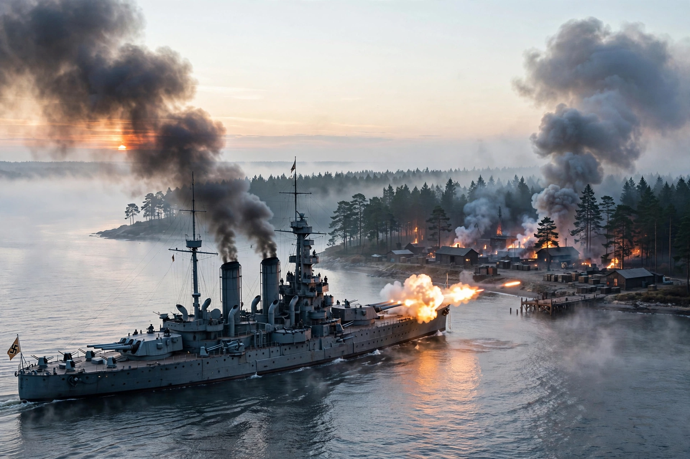

Battle of Westerplatte

The Battle of Westerplatte was the first battle of the German invasion of Poland, marking the start of the Second World War in Europe. From 1 to 7 September 1939, a small Polish garrison at the Military Transit Depot on the Westerplatte peninsula in the Free City of Danzig held out against overwhelming German attacks from land, sea and air.
| Date | 1–7 September 1939 |
|---|---|
| Location | Westerplatte, Free City of Danzig |
| Result | German victory; Polish garrison surrenders after seven days |
| Belligerents | Germany — Poland |
| Commanders | Friedrich-Georg Eberhardt; Gustav Kleikamp — Major Henryk Sucharski; Captain Franciszek Dąbrowski |
| Strength | c. 3,400 men, battleship Schleswig-Holstein, dive bombers — c. 180–240 men |
Background
Westerplatte was a Polish military depot on a narrow peninsula guarding the harbour channel of Danzig (Gdańsk). By treaty the garrison was limited to fewer than 90 men, but Poland had secretly reinforced it to roughly 180 soldiers with field guns, mortars and machine-gun outposts hidden among the trees.
The battle
At 04:47 on 1 September 1939 the German pre-dreadnought battleship Schleswig-Holstein opened fire at point-blank range — shots often described as the first of the Second World War. German naval infantry assaults were repelled on the first day with heavy losses. For a week the defenders endured naval shelling, artillery fire and Stuka dive-bombing, which destroyed Guardhouse No. 5 and most of the barracks. Major Sucharski, with his men exhausted, wounded and short of water and ammunition, surrendered on 7 September; the Germans allowed him to keep his sabre in recognition of the defence.
Legacy
Westerplatte became a symbol of Polish resistance, celebrated in Konstanty Ildefons Gałczyński's poem "Song of the Soldiers of Westerplatte" and in the monumental 1966 memorial on the site. Polish casualties were about 15–20 killed; German losses were several hundred.